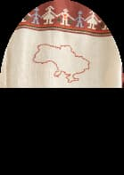

<!-- Bohdan Tkach start hero section -->

<section class="hero container">
  <h1 class="title-hero">
    Reviving the traditional
    <span class="ukrainian-hero">Ukrainian</span> artistry in every stitch.
  </h1>
  <a class="link-order-hero" href="#section-order">
    Order<svg
      class="icon-arrow"
      width="26"
      height="10"
      aria-label="yellow arrow"
    >
      <use href="../img/icons.svg#icon-arrow"></use>
    </svg>
  </a>
  <div class="icon-text-wrapper">
    <svg
      class="star-made-by-hand"
      width="52"
      height="51"
      aria-label="yellow star"
    >
      <use href="../img/icons.svg#icon-sun"></use>
    </svg>
    <p class="text-under-icon">all embroidery is made by hand</p>
  </div>
  <div class="hero-container-girl">
    
    <div class="hero-cloth-ukraine">
      
    </div>
  </div>
</section>
<!-- Bohdan Tkach end hero section -->
